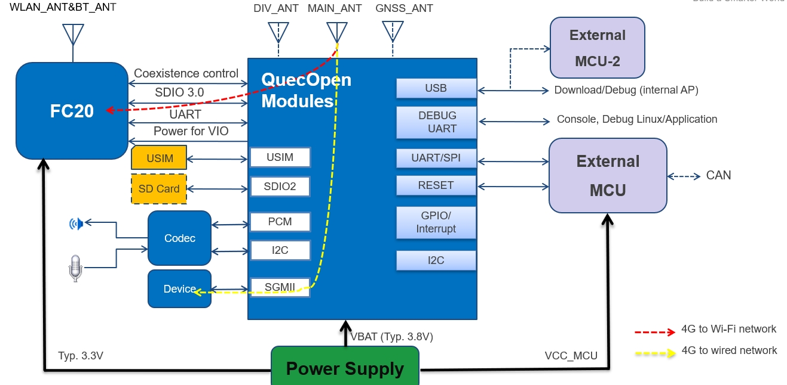

EC2x Overview
Quectel EC2X is based Qualcomm MDM9x07 Chip. CPU & O.S
ARMv7 Cortex A7 up to 1.2GHz with 256KB L2 cache. (Performance: 2280 DMIPS @1.2GHz, 1.9 DMIPS/MHz).
Linux distribution with kernel 3.18.
Quectel module
Software Framework

Platform Info
The memory and flash size
ROM |
RAM |
/bit |
|
|---|---|---|---|
4G |
512MB |
256MB |
4+2 |
2G |
256MB |
256MB |
2+2 |
1G |
128MB |
128MB |
1+1 |
FC20 is based on Qualcomm QCA102.
Hardware Overview
EC2x 支持SPI/I2C/Uart,Audio PCM/I2S接口、USB、SDIO、SIM卡、SGMII。详细需要查阅Hardware-Design. 模组的硬件资源
USB
SGMII
USIM
SDIO/SDC
WLAN
UART
SPI/I2C
PCM/I2S
硬件请参考
Quectel_EC21-QuecOpen_Hardware_Design_V1.0.pdf
如果使用移远的EVB，需要拿到对应EVB和TE-A的原理图。
移远的EC2x可以用在UMTS<E-EVB或者LTE OPEN-EVB上。